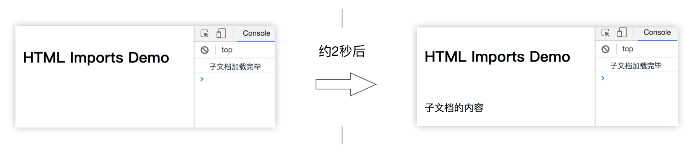
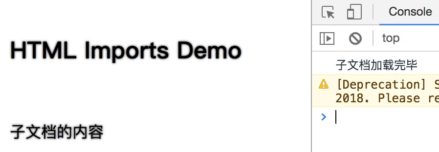

HTML Import
HTML Import（HTML 导入） 可以将外部的 HTML 文档引入到当前页面中，并对当前页面提供完全的 DOM 访问。
基本用法
目录结构：
static # 静态文件服务根目录
└── html-import
├── index.html # 主文档
└── part.html # 外部文档
HTML Import 需要通过声明了 rel="import" 属性的 <link> 元素来导入外部 HTML 文档。而且无法通过文件协议（file:///）访问，必须是 HTTP 或者 HTTPS。
<!-- index.html -->
<!DOCTYPE html>
<html>
<head>
<title>HTML Imports</title>
<link rel="import" href="./other.html">
</head>
<body>
<h1 style="padding: 20px;">HTML Imports Demo</h1>
<div id="part-container"></div>
</body>
</html>
<script type="text/javascript">
(function() {
var linkEleList = document.querySelectorAll('link[rel="import"]');
var extDocOther = linkEleList[0].import;
setTimeout(function() {
document.getElementById('part-container').appendChild(
extDocOther.querySelector('div').cloneNode(true)
);
}, 2000);
})();
</script>
被引用的 HTML 文档：
<!DOCTYPE html>
<html>
<head>
<title>一个子文档</title>
</head>
<body>
<div style="padding: 20px;">子文档的内容</div>
</body>
</html>
<script type="text/javascript">
(function() {
console.log('子文档加载完毕');
})();
</script>
在本地的服务中访问 index.html 页面，观察控制台的输出，可以看到立即会打印出“子文档加载完毕”，约2秒后，主文档中显示出“子文档的内容”。效果如下图所示。

跨域引用
除了使用相对路径来引入同一个域下的 HTML 页面，还可以使用 URL 引入其他域下的文档，例如：
<link rel="import" href="http://borninsummer.com/">
样式影响
目前的草案里，有一章节是“9. Style processing with Imports”，描述了被引用的文档的样式要对主文档产生影响。这种样式的变化通常出乎意料，可能会对主文档造成较严重影响。因此，草案的撰写人们计划将这一章节从 HTML Imports 提案中移除（https://github.com/TakayoshiKochi/deprecate-style-in-html-imports）。
在上面的示例中，如果 other.html 中用 <style> 元素声明了一些样式规则，例如
<style type="text/css">
/* 给所有的文字添加阴影效果 */
body {text-shadow: 0 0 2px #333;}
</style>
那么主文档也会立即在引入 other.html 文档后被应用其中的样式规则（在 Chrome65 版本中测试）：

TakayoshiKochi 称，在 Chrome 67 版本之后，被引入的文档的样式将不会再应用于主文档 [1]。
事件
浏览器支持情况
| Firefox (Gecko) | Chrome | IE | Safari | Opera |
|---|---|---|---|---|
| No support | 61.0 | No support | Support | |
| Android | iOS Safari | |||